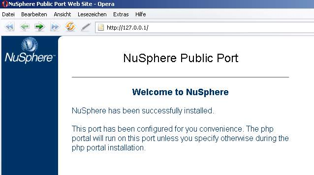
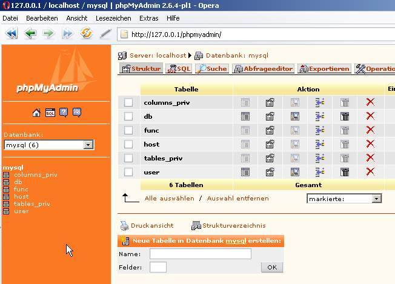
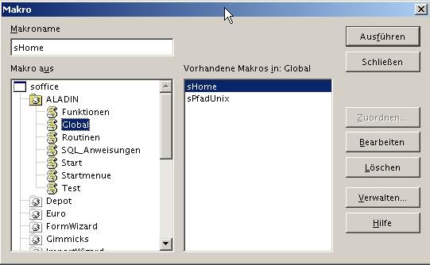
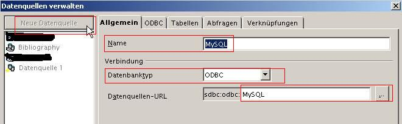
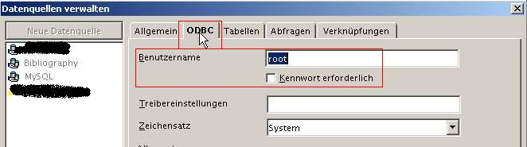
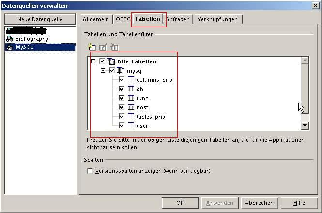
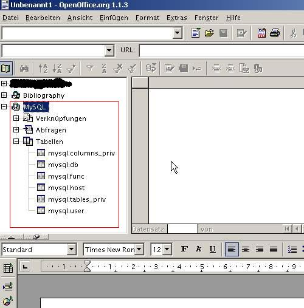
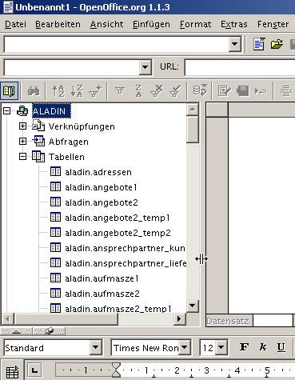
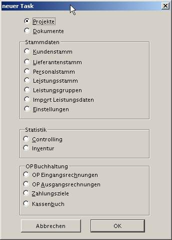
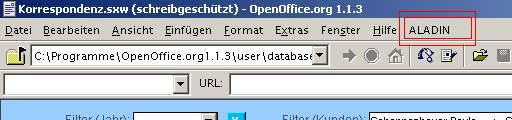

ALADIN - eine Fakturierungs Umgebung für den Büroalltag
Zu allererst möchte ich demjenigen recht herzlich Danken, der ALADIN auf die Computerwelt losgelassen hat. Nicht nur daß, er stellt das Programm ALADIN auch noch kostenfrei zur Verfügung. Als ob das nun nicht schon genug wäre. Erst durch seinen sehr guten und uneigennützigen Service, vielen Zeilen Mail's die hin und her wanderten, ist es mir nun doch gelungen ALADIN auf dem eigenen Rechner zum Leben zu erwecken.
Ich muss dazu sagen, das ich im Vorfeld nichts mit Büroabrechnung, Formularbearbeitung usw. usf. am Hut hatte
MySQL-Server downloaden und installieren
ODBC-Treiber besorgen und installieren
Installation und Inbetriebnahme von ALADIN
Basic-Bibliothek ALADIN in OOo hinzufügen
Datenbankschnittstelle in OOo konfigurieren
Die Tabellen für ALADIN erstellen
Anhang und weiterführende Links
Einleitung: Weshalb ALADIN
Es
ging darum, für eine kleine Büroumgebung ein Rechnungs-,
Auftrags- und nicht zuletzt eine Korrespontenzumgebung welche für
Normaluser bedienbar und pflegeleicht ist, zu finden.
Sicherlich
gibt es zu diesem Zwecke viele, auch kostenlose Vorlagen für
diverse Officeanwendungen. Voraussetzung aber war, die zukünftige
Lösung soll zunächst vorrangig auf Linux lauffähig
sein. Parallel dazu aber auch auf WindowsXP-Systemen. Von beiden
Systemen aus sollte es möglich sein, auf einen einzigen
Datenstamm zugreifen zu können.
Nach langem Suchen bin ich auf ALADIN gestoßen. Gegenüber andern kostenlosen Programmen bietet es die Möglichkeit, auf Windows wie auch auf Linux und wohl auch auf einem MAC und anderen Betriebsystemen lauffähig zu sein. Voraussetzung ist ein auf den Betriebssystemen installiertes OpenOfficeorg und eine Verbindung zu einer MySQL-Datenbank.
Der Vorteil wiederum, die Datenbank muss nicht auf dem gleichen Rechner installiert sein, von dem aus gerade gearbeitet wird. So bietet sich die Möglichkeit, von verschiedenen Rechnern aus auf die gleiche Datenquelle zuzugreifen.
Im Folgendem die Wiedergabe, wie ich es mit schaffte ALADIN zum Arbeiten zu überreden ;)
Mit viel Ausdauer des Programmierers von ALADIN mir gegenüber und nur mit Hilfe des Programmierers ist es mir gelungen, eine funktionstüchtige Arbeitsumgebung zunächst auf einem Windows XP Rechner zustande zu bringen. An dieser Stelle nochmals recht herzlichen Dank!
Hier kurz eine kleine Anleitung mit ein paar bebilderten Schritten.
Diese Anleitung bezieht sich auf einen Rechner mit installierten
Windows XP SP2 und einer OpenOfficeorg Version 1.1.3 und beinhaltet die Schritte bis zur Inbetriebnahme. Eine Anleitung zur Arbeit mit dem Programm ist in diesem Dokument nicht zu finden. Sollte ich Zeit finden, schreibe ich noch eine FAQ die Probleme behandelt, die ich mit diesem Programm hatte.
Die Vorgehensweise/Anleitung habe ich nach besten Wissen und
Gewissen erstellt. Eine Haftung jedweder Art schließe ich aus.
Bei der Anpassung und Einbindung von ODBC gab es einige Probleme. Nach vielen "kleinen" ;) Problemen läuft nun ALADIN auf meinem Rechner, wie im folgendem Beschrieben. Bei der Inbetriebnahme sind natürlich die spezifischen Pfade wie sie im folgenden aufgeführt sind, an Ihr jeweiliges System anzupassen.
MySQL-Server downloaden und installieren
Zunächst einmal muss eine funktionsfähige MySQL-Umgebung
installiert werden.
Ist bei mir komplett mit Apache schon lange
und stabil am laufen.
Für diejenige, die noch keine eigene Datenbankumgebung
installiert haben, eine kurze Anmerkung.
Im Netz finden sich eine Vielzahl von LAMP (Linux-Apache-MySQL-PHP) und WAMP (Windows-Apache-MySQL-PHP) Umgebungen für den gemeinen PC.
Wer eine schnelle und unkomplizierte Webserver- und Datenbankumgebung auf seinem Rechner installieren möchte, nicht erst tausende Seiten Apache- und MySQL- und PHP Manuale durchlesen möchte ist mit XAMPP von http://www.apachefriends.org/de sehr gut beraten. Quasi auf Knopfdruck ist es möglich, mittels XAMPP eine komplette Webserverumgebung mitsamt Datenbankanbindung auf den heimischen PC zu zaubern.
Zitat aus der dortigem Website:
So mancher wird schon die
Erfahrung gemacht haben: Ein Apache-Webserver installiert sich nicht
so leicht. Noch schwieriger wird es, wenn weitere Pakete wie MySQL,
PHP oder Perl dazukommen. XAMPP ist eine Distribution von Apache,
MySQL, PHP und Perl, die es ermöglicht diese Programme auf sehr
einfache Weise zu installieren.
Zur Zeit gibt es vier XAMPP-Versionen:
eine Version für Linux Systeme (getestet für Ubuntu,
SuSE, RedHat, Mandrake und Debian),
eine Version für Windows
98, NT, 2000, 2003 und XP,
eine Beta-Version für Solaris
SPARC (entwickelt und getestet mit Solaris 8),
eine Beta-Version
für Mac OS X.
Auf die Installation von XAMPP selbst möchte ich hier nicht eingehen. Eine gute und umfangreiche Anleitung liegt XAMPP bei. Danach sollte es keine Probleme geben, schnell und problemlos eine Serverumgebung auf dem eigenen PC zu installieren.
Testen kann man den gerade installieren und im Hintergrund werkenden Webserver, wenn man einen
Browser (Firefox oder Opera) startet und in die Adresszeile "localhost" oder die IP-Adresse 127.0.0.1 eingibt. Es
sollte wie im folgendem Bild die Startseite des Webservers aufgerufen
und dargestellt werden. (Die Abbildung stimmt nicht mit derjenigen
überein, die nach der XAMPP-Installation zu sehen ist.)
Wichtig
ist, das über localhost oder 127.0.0.1 die "Startseite" des auf dem System laufenden Server's präsentiert wird.

Nun sollte noch überprüft werden, ob MySQL seine Daten präsentieren möchte. Am einfachsten funktioniert das wieder mittels eines Webbrowsers und dem Paket phpMyAdmin. Dieses Paket liegt bei XAMPP bereits dabei und kann über die Startseite und den Navigationspunkt "Datenbank verwalten" o.ä. aufgerufen werden. Der Aufruf der MySQL Datenbank würde wie im folgenden aussehen.

So, nun kann man/frau sich erst einmal auf die Schultern klopfen. Für diejenigen die noch nie einen eigenen Webserver auf dem System zu laufen hatten, ein großer Schritt.
ODBC-Treiber besorgen und installieren
Zu all dem muss noch ein ODBC-Treiber her. Der kann unter folgender Adresse herunter geladen werden und anschließend problemlos installiert werden.
ODBC-Treiber downloaden:
http://dev.mysql.com/downloads/connector/odbc/3.51.html
Installation und Inbetriebnahme von ALADIN
Nun zum Eigentlichen, der Installation und Inbetriebnahme von ALADIN.
OpenOfficeorg sollte natürlich bereits auf dem Rechner installiert sein. Auf meinen Rechner läuft die Version 1.1.3.
Weiterführende Links zu OpenOfficeorg, Apache, MySQL und ODBC findet Ihr im Anhang.
Zunächst sollten Sie ALADIN einmal auf Ihren Rechner herunter laden. Die dazu notwendigen Dateien erhalten Sie >hier<
Ein paar grundsätzliche Zeilen zur Installation und zum Funktionsumfang findet man in der dem Paket beiliegenden Datei "liesmich". Menschen die ständig mit OOo zu tun haben und auch in dieser Umgebung programmieren, wird diese knappe Einführung sicherlich ausreichen. Ich, der mit OOo und Macros in OOo noch so gut wie nichts zu tun hatte, habe und hatte damit erhebliche Probleme. Deshalb auch noch einmal dieses Document um die Vorgänge späterhin noch einmal nachvollziehen zu können und für diejenigen, die das alles noch vor sich haben, als kleine Hilfe.
Das Paket ALADIN zunächst einmal in ein temporäres
Verzeichnis auf der Festplatte entpacken.
Im Paket enthalten ist
ein Ordner "user". Darin die Verzeichnisse mit Namen
"basic" und "database". Diese Verzeichnisse
enthalten jeweils einen Ordner "ALADIN"
Diese beiden Ordner "ALADIN" aus dem Verzeichnis
"database" gehört in das OpenOfficeorg
Programmverzeichnis \user\database\ kopiert.
In diesem Falle
nach:
C:\Programme\OpenOffice.org1.1.x\user\database
Das gleiche passiert mit dem Ordner "ALADIN" aus dem
Verzeichnis "basic". Den kopiert man in das
Verzeichnis:
C:\Programme\OpenOffice.org1.1.x\user\basic\
(siehe
folgendes Bild):
Basic-Bibliothek "ALADIN" in OOo hinzufügen
Unter dem Menüpunkt "Extras" -> "Macros"
-> "verwalten" muss nun unter dem Karteikartenreiter
"Bibiolotheken" unter "hinzufügen..."
"ALADIN" als Basic-Bibliothek hinzugefügt werden. Dazu
sucht man im Installationsverzeichnis von OOo die entsprechende
Quelle. Die
lautet:
C:\Programme\OpenOffice.org1.1.3\user\basic\ALADIN\script.xlb
Nun
ruft man wieder den Menüpunkt "Extras" -> "Macros"
auf. dort findet sich nun folgendes Bild:

In der Bibliothek "ALADIN" unter "Global" müssen nun folgende Variablen angepasst werden:
|
Global const sOOo="OpenOffice.org1.1.3" Verzeichnisname
der Installation Im Modul selbst sieht das Ganze dann folgendermaßen aus: '------------------------------------------------------------------------------------------------------------------- Function
sPfadUnix as String 'Pfad für
UNIX-Installation
|
|
|
Datenbankschnittstelle in OOo konfigurieren
Das Programm OpenOfficeorg (im Folgendem als OOo bezeichnet) ist
geöffnet.
Unter dem Menüpunkt „Extras“ -
„Datenquellen“ rufen wir den Dialog „Datenquellen
verwalten“ auf. Open links im Dialog haben wie die M öglichkeit
über den Buttom „neue Datenquelle“ eine neue
Datenquelle zu erstellen. Unter „Name“ muss der Name
„MySQL“ vergeben werden (ohne „“).
In der
Datei „liesmich“ steht geschrieben, daß "MySQL"
mit "create"- Rechten angelegt werden soll. Dazu konnte ich
unter dem Dialog „Datenquelle neu“ unter Windows XP keinen
Punkt entdecken, unter dem „create“ aktiviert werden
kann. Vielleicht schreibt ja der Programmier noch etwas genauer zu diesem Punkt.
Unter „Datenbanktyp“ habe ich an dieser Stelle
ODBC ausgewählt. (siehe dazu bereits die o.g. Zeilen zum Problem der Einbindung der DB)
Unter „Datenquellen-URL“
sollte nun die MySQL Datenbank auszuwählen sein.
Nun wird der Karteikartenreiter ODBC ausgewählt, um die Verbindungsdaten zur Datenbank einzutragen. Als Standard (z.B. unter installierter Serverumgebung mit XAMPP) ist hier als als Benutzer der Benutzer root ohne Passwort einzutragen. Als Zeichensatz habe ich hier noch „System“ angegeben.
Ab und an, nach getätigter Eingabe sollte der Buttom
„Anwenden“ gedrückt werden.
Wenn sie jetzt den
Karteikartenreiter „Tabellen“ auswählen, sollten die
Tabellen der Datenbank „mysql“ aufgelistet werden.
Ansonsten (bei evtl. Fehlermeldung) sollten Sie Ihre Eingaben
überprüfen. Evtl. kann es auch an einem Fehler im
installierten myODBC Treiber liegen, das die Verbindung zur Datenbank
nicht aufgebaut werden kann.
In diesem Falle nicht gleich
aufgeben. Ich habe viele Anläufe gebraucht, bis die erste
Verbindung zu Stande kam. Etwas Geduld bei dieser Aktion ist
angebracht.
Im folgendem noch einmal die 2 Schritte:
-> Menüpunkt „Extras“ -> „Datenquellen“:
1.)

2.)

3.)

Ist OOo gestartet sollte nun über die Taste [F4] die Datenquellenansicht aufgerufen werden. Unter der Datenquelle „MySQL“ die wir gerade erfolgreich angelegt haben, sollten jetzt die in der Datenbank enthaltenen Tabellen zu sehen sein:

Die Tabellen für ALADIN erstellen (lassen)
Nun wird die Datei „createTables.sxw“ in dem Programmordner von OOo (z.B.: C:\Programme\OpenOffice.org1.1.3\user\database\ALADIN\ ) mit Schreibschutz geöffnet.

Es kann nun (und sollte auch) mit "Benutzer anlegen und
Zugriffsrechte setzen" ein Benutzer mit einem Kennwort für
die Datenbank „aladin“ angelegt werden. Nun muß nach dieser Aktion der MySQL-Server neu gestartet werden.
Kleiner
Tip für diejenigen die Apache und MySQL über XAMPP
installiert haben. Server beenden und starten kann man ganz leicht
über das Administrationstool von XAMPP erledigen lassen. Dieses
Tool befindet sich im Programmordner von XAMPP.
Ist das erledigt, wird mit dem Buttom "Tabellen in Datenbank erzeugen", die Tabellen für ALADIN in der Datenbank „aladin“ erzeugt. Diese Aktion dauert einen kleinen Moment und man sollte den Rechner dazu Zeit geben, diesen Job erledigen zu können ;)
Datenquelle ALADIN anlegen
Genau so, wie im Punkt „Datenquelle MySQL erstellen“ erstellen wir nun eine neue Datenquelle „ALADIN“ für OOo.
Noch einmal zur Vorgehensweise:
Menüpunkt „Extras“ -> „Datenquellen“
-> „neue Datenquelle“ vergeben wir den Namen „ALADIN“
(ohne die „ “) . Als Datentype wird „MySQL“
ausgewählt. Unter dem Tab MySQL wird der Punkt „Existierende
MyODBC _Datenquelle verwenden“ ausgewählt. Im Punkt
„Datenquellen-URL“ wird die Datenbank „aladin“
ausgewählt.
Als „Benutzername“ geben Sie den im
letzen Abschnitt angelegten User an. Haben sie für diesen User
ein Passwort vergeben, so setzen sie den Hacken bei „Kennwort
erforderlich“. Zunächst sollte als Zeichensatz der bereit dargebotene Zeichensatz übernommen werden. Späterhin habe ich als Zeichensatz Westeuropa
(ISO-8859-15) ausgewählt. Diese Auswahl habe ich nach vielen
Fehlversuchen mit der Verbindung zur Datenbank gewählt. Es kann
also durchaus sein, daß Sie bei Verbindungsproblemen oder
anderen Problemen mit der Datenbank eine andere Auswahl treffen
müssen.
Nun sollten Sie unter „Datenquellen“ (zu erreichen
unter anderem mit der Taste [F4]) unter der Datenquelle „ALADIN“,
die zuvor mit dem Buttom "Tabellen in Datenbank erzeugen"
erzeugt haben, zu sehen sein.

In der Version „aladin.2005-10-01“ waren das 76 Tabellen. Im Windows XP werden die Tabellen komplett mit Kleinbuchstaben in der MySQL-Datenbank erzeugt. In meiner SUSE-Linux 9.2 Version werden die Tabellen mit Großbuchstaben in der Datenbank erzeugt. Unter Windows XP hatte ich Deshalb ein „paar“ Probleme mit der Datenbankanbindung mittels OOo Version 1.1.3. Stand 10/2005. Laut o.g. Vorgehensweise sollte es aber relativ problemlos funktionieren.
Erster Start von ALADIN
Legen Sie nun zunächst einmal eine Verknüpfung zum
Starten von ALADIN auf dem Desktop an.
Bei mir sieht die
Verknüpfung so aus:
C:\Programme\OpenOffice.org1.1.3\program\soffice.exe
macro:///ALADIN.Startmenue.neuerTask
Für eine Linuxoberfläche liegt dem ALADIN-Paket bereits ein Link inkl. Icon bei.
Beim Ausführen dieser Verknüpfung erhalten Sie den Startdialog von ALADIN:

Nach dem Ausführen einer Funktion z.B. „Anlegen eines neuen Kunden“ finden sie in der Menüleiste von OOo einen neuen Menüpunkt „ALADIN“. Von dort aus lässt sich sehr schnell auf die vielfältigen Funktionen von ALADIN zugreifen.

Viel Spass,
Roland Kühne
Weiter Links:
Über ALADIN selbst:
aladin-gmbh.de
Über myODBC erfährt User noch
etwas
auf:
http://www.little-idiot.de/mysql/mysql.html#toc30
Weiterhin
gibt es dort ein Handbuch für mySQL in
dt.-Sprache:
http://www.little-idiot.de/mysql/mysql.html
OOo
sollte natürlich auf dem Rechner installiert sein.
http://openofficeorg.de
Die Seiten des Apachefriends Projektes:
http://www.apachefriends.org/de